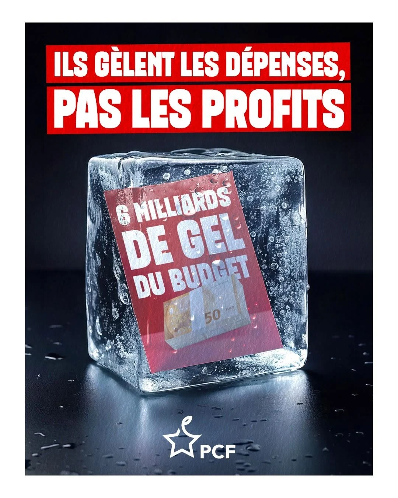

Publication relayée par le PCF 79
Le PCF réagit au projet de gel de six milliards d’euros de crédits publics
Date de mise à jour indiquée par Facebook · 22 avril 2026
Texte de la publication · PCF national
🧊 Le gouvernement prévoit jusqu’à 6 milliards d’euros d’économies en gelant ou annulant des crédits publics. 6 milliards pris directement dans les budgets de l’État et de la Sécurité sociale pour compenser les effets de la guerre au Moyen-Orient.
6 milliards, c’est autant d’argent en moins pour les services publics, pour les politiques sociales, pour répondre aux besoins concrets du pays et de nos concitoyens.
Pendant ce temps, les grands groupes pétroliers continuent d’engranger des profits massifs grâce à la hausse des prix du carburant.
Faire payer la crise à la population plutôt qu’à ceux qui en profitent : voilà le choix du gouvernement.
🚩 Nous refusons cette logique d’austérité.
L’argent existe : il doit être récupéré là où il se trouve, sur les superprofits, pas sur l’intérêt général.

Sources
PCF national · publication relayée par le PCF 79 · bibliothèque Facebook · AR-0002-FB-00806
À lire aussi · À Thouars, la fonction publique se mobilise le 5 décembre · Le lien vidéo